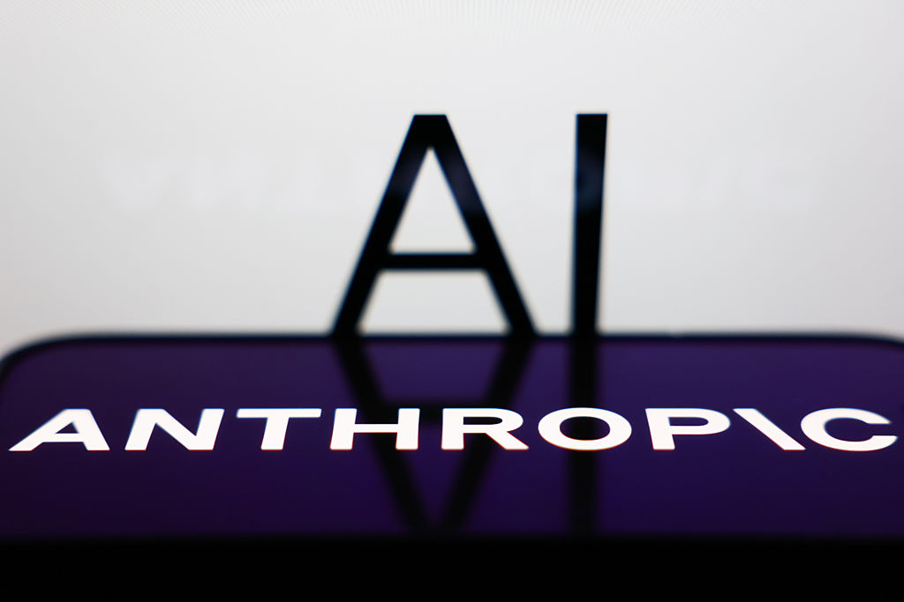
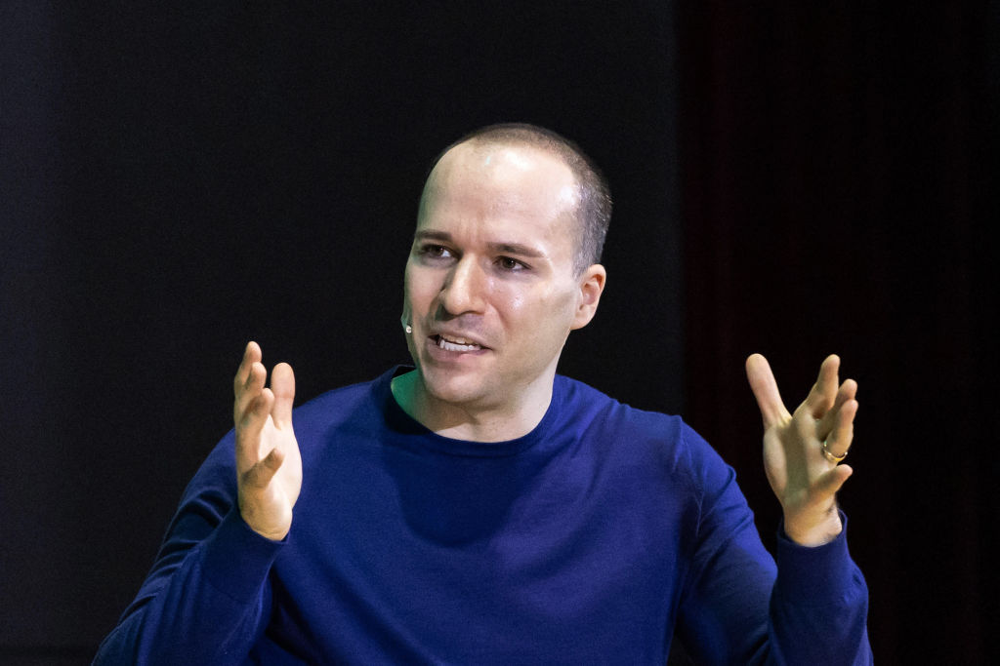
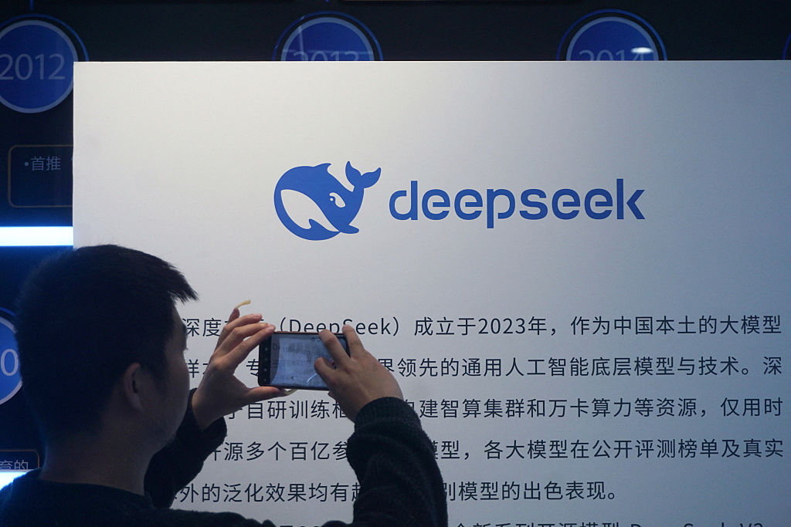
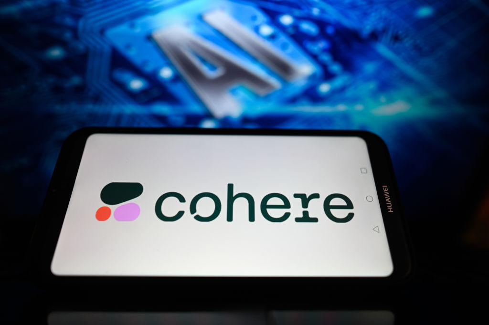

N°07 Google 把 $40B 砸進 Anthropic · 算力比現金更值錢

Pin · 表面是投資，底層是供應協議。Anthropic 拿到的不是現金而是 TPU。
發生什麼
TechCrunch 報導，Google 規劃對 Anthropic（Claude 母公司）投入 up to $40B in cash and compute。比例與分期未對外披露，業界估計 compute 部位佔 60% 以上，等於是 multi-year TPU 供應合約包進股權交易。
同一週 Google 釋出 Mythos cybersecurity 模型，把 Gemini 線往安全垂直推。Anthropic 則維持先前的 Amazon $8B 投資與 AWS Trainium 大量採購節奏——形同把命脈算力分散在兩家雲商。
為什麼重要
第一，模型公司的真實成本已經移動到「算力 take-or-pay 合約」。過去三年大家盯估值，現在要盯的是「未來 36 個月你能不能拿到夠多卡」。Anthropic 雙線綁 TPU 與 Trainium，是把單一供應商斷貨風險拆掉的標準動作。
第二，Google 同時是 Anthropic 的最大客戶、最大投資人、最大競爭對手。Gemini 與 Claude 在 enterprise 提案台正面撞，但底層 TPU 卻共用一家。雲端業務的中性原則跟模型業務的勝負心態會在內部攤牌——Sundar Pichai 接下來怎麼分權，是 Google AI 戰略的關鍵分岔。
我們的判斷
三個看點：
(1) 數字會被分批公布。真正進帳的現金可能只有 $5-10B，剩下是 multi-year compute commitment，會計上比較像 deferred revenue。投行模型要重做，不能直接把 $40B 當 valuation 加分。
(2) Anthropic 會進一步深化「multi-cloud frontier lab」定位。跟 OpenAI 重壓 Microsoft 的單一賭注做差異化。enterprise CTO 對「不被綁死」的需求會把 Anthropic 的合約量推上一階。
(3) 美國反壟斷會醒。FTC 上次對 Microsoft-OpenAI 結構發過 second-request 函；Google-Anthropic 的雙邊綁定更深，2026 下半年大概率觸發新一輪審查。投資人要把法務尾款列入折現。
N°08 OpenAI 出 GPT-5.5 · 不是模型升級是 super app 卡位

Pin · 升的不是模型，是入口。OpenAI 要把 ChatGPT 變成下一代 super app。
發生什麼
TechCrunch 引述 OpenAI 描述 GPT-5.5 在 tool use 一致性、上下文記憶、coding agent 三個關鍵指標明顯升級。同步推出的還有 ChatGPT Tasks 排程器、ChatGPT Connectors 統一搜尋（接 Slack / Drive / Notion）、以及 ChatGPT Wallet 付費代理 beta。基礎訂閱價格未動，仍是 $20/月。
距離 GPT-5 公開不到 6 個月。HN 頭條當日盤踞，討論串重點不在模型本身——而在「OpenAI 已經不是研究院」。
為什麼重要
第一，產品節奏已不是「模型」而是「平台」。每次升模型都搭一個新 surface（Tasks、Wallet、Connectors）——這是 super app 路線書，不是 lab 路線書。微信、Grab、Gojek 走過的劇本，現在 OpenAI 用一年半要走完。
第二，super app 路線跟訂閱制本質衝突。當 ChatGPT 同時是支付、搜尋、排程、編程入口，$20/月的單價遲早撐不住。OpenAI 接下來必定引入 transaction fee 模型——Sam Altman 春天訪談就吹過 take rate 的風，現在路徑已經清楚。
我們的判斷
三個看點：
(1) 對中型 SaaS 是利空。Notion AI、Linear AI、Asana AI 這類「本地 LLM 包裝」會被 Connectors 變成被插的水管。產品差異化必須往「資料模型 + 工作流」更深的方向走，否則被吃乾。
(2) Apple Intelligence 與 Android Gemini 的反應會加速。誰能在系統層先做到跨 app 排程跟 wallet 整合，誰能擋住 ChatGPT 拿走 super app 王位。Apple 這檔的劇本與 Stratechery 本週討論的 Ternus 接班直接相關。
(3) 監管會把 ChatGPT 視為 marketplace 而非 chatbot。歐盟 DMA gatekeeper 名單之爭今年下半年會浮出檯面。super app 賺得多但被監管成本也比 chatbot 重一個量級。
N°09 DeepSeek 預覽新模型 · 開源逼近前沿剩下幾哩

Pin · 95 分模型只要 10% 成本，前沿封閉模型的溢價空間正在被壓縮。
發生什麼
TechCrunch 報導 DeepSeek 釋出新一代模型 preview。團隊宣稱在 SWE-bench、MATH、MMLU 三個關鍵指標都接近 GPT-5.5 與 Claude 的 90% 水準，並維持權重完全開放、預告公布訓練資料配方。中國國內媒體強調「以較少高階卡達成同等成績」——直接挑戰美方的算力封鎖敘事。
業界拆解認為 DeepSeek 同時用 H20、Huawei Ascend、自製 cluster 混合堆疊，而不是純 H100。這是出口管制下的標準應對。
為什麼重要
第一，前沿封閉模型的溢價空間被結構性壓縮。當開源 95 分模型只要 10% 的成本，企業 CTO 會重新審視「為什麼還要付 OpenAI/Anthropic API 全價」。差距從「10 倍體驗」變成「最後一哩體驗」，這是議價談判的轉折點。
第二，地緣政治面被擺到最前。美國商務部對 H100 出口的管控效果有限，DeepSeek 用混合堆疊持續輸出結果。下一步美國可能轉向「軟體層管制」——例如限制 PyTorch、CUDA 對特定中國機構授權，這比卡硬體有效但政治代價更高。
我們的判斷
三個看點：
(1) 開源 frontier model 的 hosting 平台短期受惠。Together、Fireworks、Replicate 會吃下大量「不想跟中國公司直接簽合約但想用 DeepSeek」的需求。中介層商機被打開。
(2) Anthropic 與 OpenAI 的差異化會回到企業合約面。純粹模型能力差距收窄之後，安全保證、SOC2、合約責任、SLA 才是定價權所在。frontier lab 的銷售團隊規模會擴張。
(3) 美國立法層會討論「開源模型出口管制」。但這個討論卡很久——連定義都很難（多少億參數算「frontier」、開源權重算不算「軟體出口」）。預期 2027 年都未必能立法落地。
N°10 Cohere 併 Aleph Alpha · 歐洲第一次有真正的主權 AI 牌

Pin · 主權 AI 不再只是政治口號 · 變成歐洲企業 IT 採購清單上能簽的選項。
發生什麼
TechCrunch 揭露交易結構。Cohere 取得 Aleph Alpha 的歐洲企業客戶基礎與德國資料中心，Aleph Alpha 換股加技術共建。背後主導注資的是 Schwarz Group（德國最大零售集團，旗下含 Lidl、Kaufland、Stackit 雲端），並將 Stackit 列為主要部署平台。新聯合品牌可能保留雙標識。
Aleph Alpha 過去兩年因模型迭代落後一直在融資吃緊，Cohere 的 enterprise sales 機器加上 Schwarz 的零售部署規模，是這次合併能 close 的關鍵齒輪。
為什麼重要
第一，主權 AI 不再是政治口號而是企業 IT 採購選項。歐洲銀行、保險、政府過去 18 個月被「資料不出 EU」的合規條款卡住，OpenAI / Anthropic 都還在補歐盟資料中心 commitment。Cohere-Aleph Alpha 給出第一個能直接簽、能放進 RFP 的選擇。
第二，這是後 Mistral 時代歐洲 AI 的第二次嘗試。Mistral 走 open-weight 加自有雲，Cohere-Aleph 走 enterprise-direct。兩個路徑會在德國銀行業、法國政府公部門、英國監理科技正面撞。歐洲 AI 不再只有一張牌。
我們的判斷
三個看點：
(1) Microsoft Azure 與 AWS 在歐洲區壓力倍增。必須加速 sovereign cloud 升級——資料殘留、加密金鑰託管、operator 國籍條款都會被客戶寫進合約。雲三巨頭歐盟業務的毛利率有壓縮風險。
(2) 美國 frontier lab 會被迫做歐盟資料中心 commitment。OpenAI、Anthropic、Google DeepMind 接下來 6 個月內預期都會宣布額外 EU region。否則就是把整片企業客戶讓出去。
(3) Schwarz 的零售背景讓這個聯盟可能直接吃下 retail vertical。Lidl/Kaufland 規模即可成為示範案例，再向 Carrefour、Tesco、Ahold 滲透。retail AI 是被低估的歐洲戰場。
N°11 Tumbler Ridge · OpenAI 公開道歉的代價
Pin · 第一次因「未通報潛在加害者」公開低頭 · 模型平台的責任邊界正式被寫成案例。
發生什麼
TechCrunch 報導，Sam Altman 對加拿大不列顛哥倫比亞省 Tumbler Ridge 社區發出公開信道歉。事件起因是當地一名嫌疑人在 ChatGPT 上預告攻擊計畫，OpenAI 內部 trust & safety 流程未在 24 小時內升級至執法通報。社區 4 月初發生實際槍擊事件造成傷亡。
Altman 在信中承認 escalation policy 失敗、未盡到合理通報義務，並承諾改寫流程、引入第三方審計、設立 incident transparency report。措辭是 OpenAI 創立以來最低的姿態。
為什麼重要
第一，模型平台的「責任邊界」第一次被具體化。過去 hate speech、CSAM、self-harm 都已有 baseline 流程，但「預告暴力」一直是灰色地帶——擔心誤通報、擔心隱私、擔心 chilling effect。Tumbler Ridge 事件把所有 frontier lab 的 mandatory law-enforcement reporting 從 nice-to-have 推到 must-have。
第二，公開道歉本身是法律策略。在加拿大集體訴訟即將提出之前先表態，是降低 punitive damages 的標準動作。但一旦道歉，等於設下「下次再犯就是知法犯法」的新基準線。OpenAI 接下來每一步 trust & safety 投資都被這封信綁住。
我們的判斷
三個看點：
(1) 短期內所有 frontier lab 都會收緊 user-facing safety filter。誤封率（false positive）會明顯上升，coding、寫作、研究類 power user 體感會變差。預期會出現 enterprise tier 與 consumer tier 的安全策略分流。
(2) Anthropic、Google、Meta 接下來 30 天內會發類似聲明。搶在被點名前先表態。industry-wide incident reporting framework 的雛形可能在 Q3 由 Frontier Model Forum 推出。
(3) 加拿大 AIDA 會被加速。人工智慧與資料法（Artificial Intelligence and Data Act）審議卡了兩年，Tumbler Ridge 會是強推動力。北美第一個強制 incident reporting 框架可能 2026 下半年就落地。
· 編輯台 · 明天 07:00 再見 ·